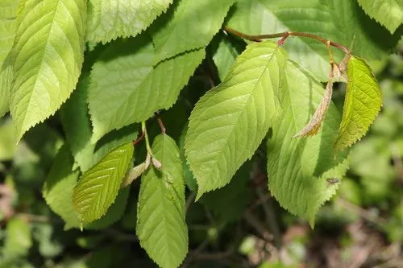

农作物与经济植物 · 植物界
樱桃 Prunus avium

樱桃是蔷薇科落叶果树，果实小巧圆润、色泽红艳、酸甜可口，富含铁与维生素，是初夏受欢迎的鲜食水果。
- 分类
- 门被子植物门纲双子叶植物纲目蔷薇目科蔷薇科属李属
- 栖息环境
- 温带凉爽地区，喜光、怕涝，花期忌霜冻
- 地理分布
- 原产欧洲东南部与西亚，中国山东、辽宁、河北等地栽培
- 保护级别
- 暂无评估（栽培作物）
物种志
樱桃是蔷薇科落叶乔木，株高 6–10 m，树皮红褐色，小枝光滑，树姿开张，幼树生长旺盛。叶片卵形或长圆状卵形，边缘有重锯齿，叶柄近顶端有腺体。伞形花序，花白色，略带香气。果实为核果，近球形，果皮鲜红至紫黑色，果肉淡黄或红色，柔软多汁，核圆形。
甜樱桃原产欧洲东南部与西亚，19 世纪引入中国，如今山东、辽宁、河北等地栽培较多。它喜凉爽干燥、光照充足的气候，需冬季低温休眠，花期怕霜冻和阴雨，适宜在排水良好的沙壤土生长。甜樱桃自花结实率低，果园常配置授粉树。果实成熟期集中在初夏，不耐贮运，多鲜食，也可加工罐头、果酱和果酒。中国本土的中国樱桃栽培历史更久，但果小、皮薄。
形态与习性
- 株高6–10 m，落叶乔木
- 花白色伞形花序
- 果实核果，红至紫黑色
- 成熟期初夏
- 贮藏不耐贮运，宜冷链
- 用途鲜食、罐头与果酱
趣味知识
- 甜樱桃和中国樱桃是不同物种，前者果大、后者果小皮薄。
- 樱桃花期怕霜冻，果园常需防霜措施。
- 樱桃果实呼吸强度高，采后不耐久放。
生态关系
- 传播 ← 白头鹎 鸟类取食果实并传播种子